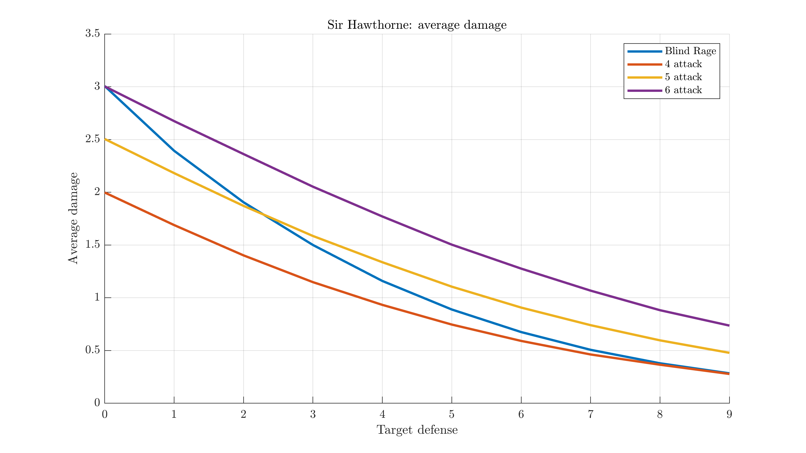
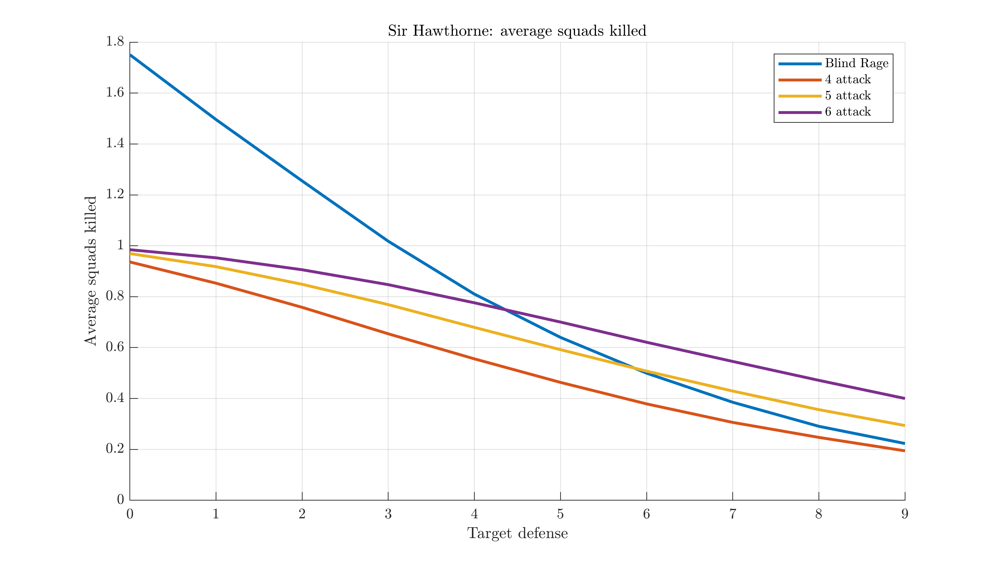
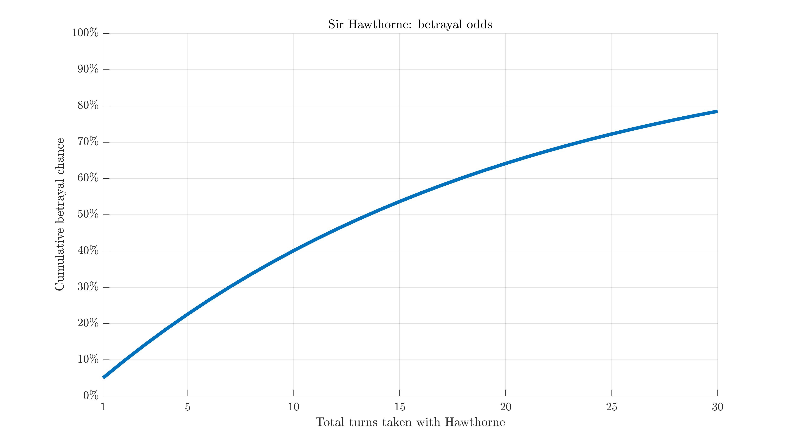

Heroscape is a tabletop war game released in 2004 and discontinued in 2010. Wikipedia, fan site. Attack dice show a skull 50% of the time. Defense dice show a shield 33% of the time. Each excess skull rolled counts as one wound. Disclaimer: I'm not particularly aware of any existing theory/math for this game. Topics like this may have been covered in the past. This is just something I got interested in doing for myself, in my own style.
Blind Rage#
Blind Rage Special Attack Range 1. Attack 3.
If Sir Hawthorne rolls at least 2 skulls with his Blind Rage Special Attack, Sir Hawthorne may attack again with his Blind Rage Special Attack. Sir Hawthorne may continue attacking with his Blind Rage Special Attack until he rolls fewer than 2 skulls.
{kind=link}
Compared to his basic attack with 4 dice, it's not immediately apparent which attack to go with. You have a 50% chance of getting at least one extra attack in, but each one is weaker. (And while there's a fair bit of variance, this works out to an average of two attacks per turn.) Simulation time:

Blind Rage is effectively always better than his basic attack. If he has height, use regular attacks against heroes with 3 or more defense. If you have two extra attack dice, always use his normal attack against heroes (unless of course some other ability interacts unfavorably with it).
Against squads, there's no benefit to overkill. As for how much this helps Blind Rage:

This makes his Blind Rage much stronger, and now +1 die is only enough against 6+ defense enemies. Even +2 dice only make his regular attack worthwhile for 5+ defense.
Stab in the Back#
Stab in the Back
After you take a turn with Sir Hawthorne, you must roll the 20-sided die. If you roll a 1, choose an opponent. That opponent now controls Sir Hawthorne. Remove any order markers on this Army Card, then give the card to that opponent.
Sir Hawthorne's other ability is a bit simpler, but we can still generate a useful chart out of it. On any given turn, of course, he has a 5% chance to betray you. But, when forming a long-term plan that involves multiple moves, how much risk is there?
The chance of him not betraying you \( n \) times is \( 0.95^n \). So the chance of at least one betrayal is \( 1 - 0.95^n \), or visually:

For example, a 10-turn mission has about a 40% chance of failing somewhere along the way. Of course, if you make it to turn 9, it's still only a 5% chance for each following move to result in betrayal. The dice have no memory, no matter how much it might feel like they do. Try to avoid activating him too often either way.